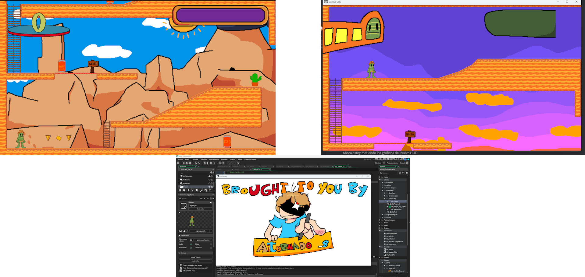
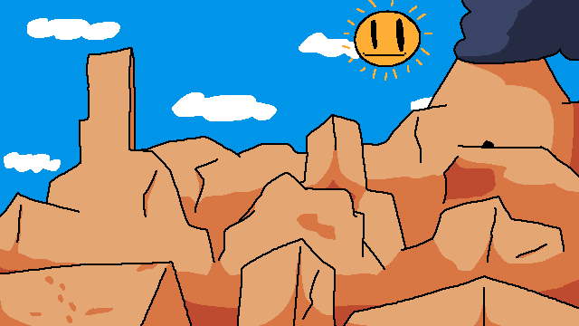
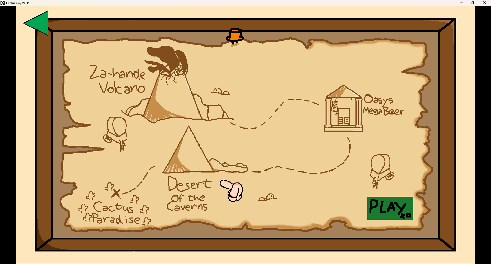

Introduction
Cactus Guy is a platformer video game that I began back on the hot summer of July 2023, after playing the game Pizza Tower
I thought about making my own platformer, as a letter of love to the genre and video games in general. My initial plans for the game were that it would have 4 levels, a simple platformer
to learn to code, and being a solo-dev in general. I have 10 builds of the game archived in my hard drive, but in February 2024, I decided to put it on-hold in favor of finishing
VS Aitornado, as it would become 4 years old and there was little to no progress.

Screenshots from February 2025, note that these show an unfinished state of the game.
Newest Background for Level 1, Desert of the Caverns.
My plans for Cactus Guy were kinda mixed, I thought about just totally cancel the game, or continue it later. But my decision, is to make it better, in the future. I'm gonna make a table with the original ideas of the game, and next to it, my future plans. To make it bigger, better and faster (well maybe not faster I just wanted to say it because of Daft Punk's song).
| Original Idea | New Idea |
|---|---|
| The game was just gonna have 4 levels | The game would have 12 levels |
| Gameplay was going to be focused on velocity, like Pizza Tower or ANTONBLAST | Gameplay will be focused on a casual platformer, like Super Mario World |
| The game was gonna happen in a little desert | The game could happen on a bigger world. |
| History was about getting a legendary beer | History would be about preventing a volcano eruption |
| The game would've had DLC content and updates | The DLCs would be on the main campaign, with their new levels, missions and ideas |
| Make it all by myself | Hire a team for level design, music, etc |
Overall, I really enjoyed working on the game. And hey, maybe I begin the development after we finish VS Aitornado, and in the mean time I plan my next big project with Dani and Izan;]